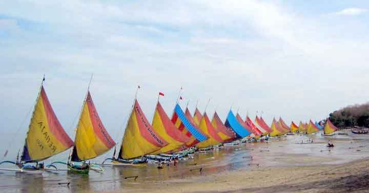
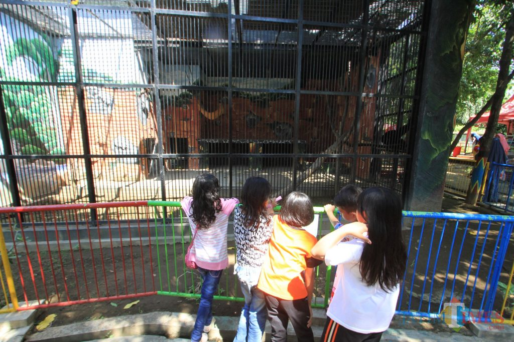
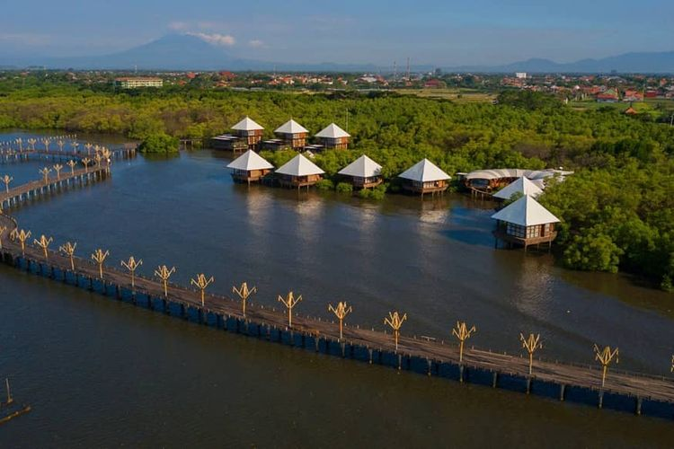

Probolinggo has so much interesting place which worth to visit. From beach to mount, and from nature to building.
Pantai Pasir Putih (in English "White Sand Beach") has great scenery. There're enjoyable blue waves,
stretches of white sand, lush trees, rows of coral reefs with sea fish, crabs, and small shells in them.
Besides those, you can enjoy canoe or boat rental, fishing, swimming to the mainland, where concerts of famous bands are often held.

Around the Mount Bromo area, there are many very beautiful tourist spots to visit, but it is not enough just 1 day to visit all of them.
Bromo is not only the best place to see the "sunrise" but there are still many spots that are very unfortunate to miss such as Madakaripura Waterfall and Pasir Berbisik.

Taman Wisata Studi Lingkungan (English: Environmental Studies Park) is the place where has many kind of flora and fauna as studies media about environment.
About 20 kind of annual plant which made this place feels cool.

There are many exciting activities that you can explore while spending the holidays with your loved ones at BJBR Probolinggo.
Besides walking around enjoying the atmosphere of this hit tourist spot in Probolingo, don't forget to explore the best rides.
There are also various instagenic photo spots that are recommended for you to make picture settings in BJBR.
Interesting BJBR landmarks and tourist icons for you to explore for an even more unforgettable vacation trip.
